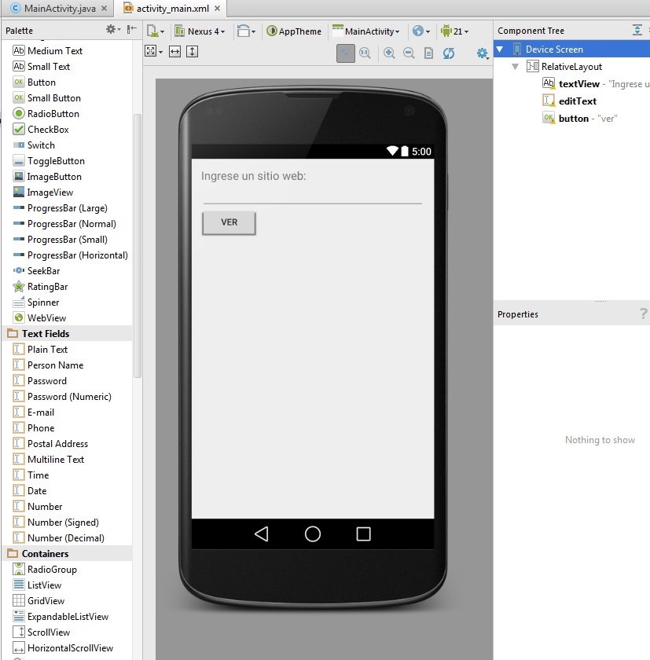
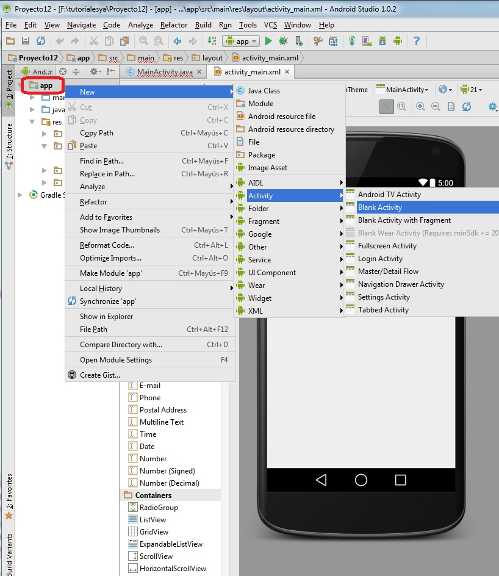
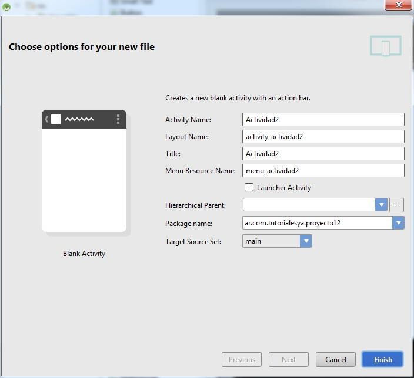
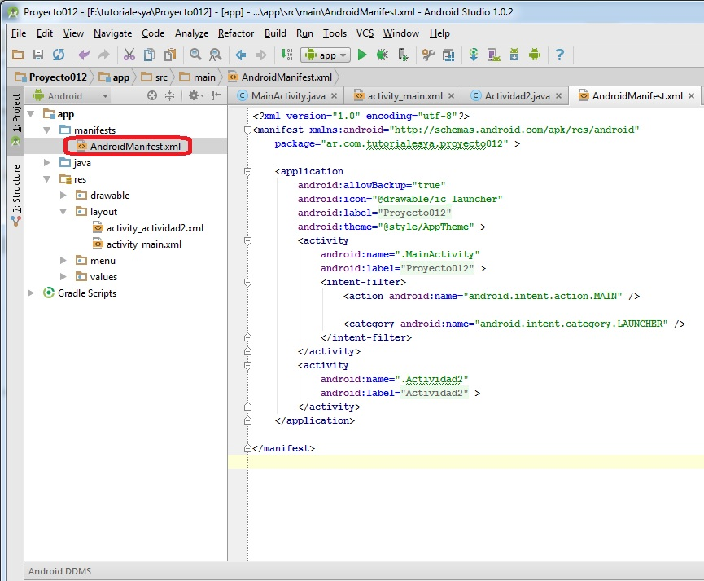
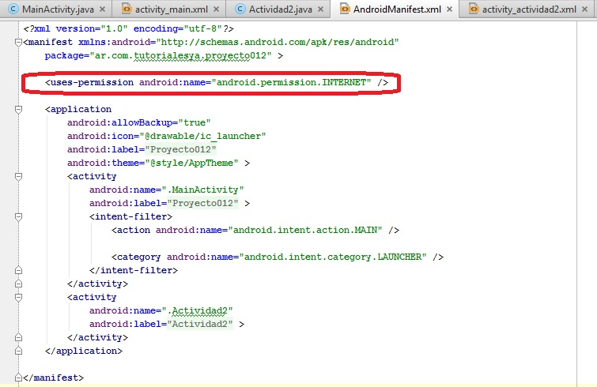
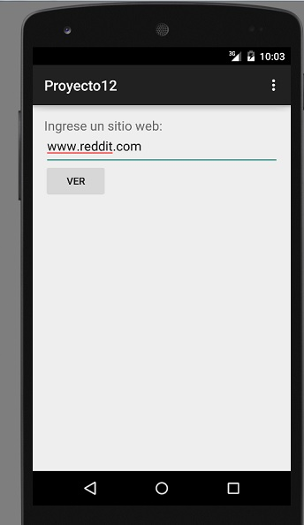
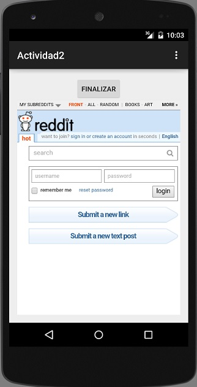

12 - Lanzar un segundo "Activity" y pasar parámetros |
Hemos visto en el concepto anterior que un programa puede tener más de una ventana representando cada ventana con una clase que hereda de ActionBarActivity.
Una situación muy común es que la primer ventana necesite enviar datos a la segunda para que a partir de estos proceda a efectuar una acción.
Confeccionar un programa que solicite el ingrese de una dirección de un sitio web y seguidamente abrir una segunda ventana que muestre dicha página.
Para resolver este problema utilizaremos el control visual WebView que nos permite mostrar el contenido de un sitio web.
Crearemos un nuevo proyecto llamado proyecto012.
1 - Nuestro primer Activity tendrá la siguiente interfaz visual (ver controles):

Tenemos un control de tipo TextView , otro de tipo EditText y finalmente otro de tipo Button (inicializar la propiedad onClick con el nombre de método llamado "ver").
El código fuente de esta Activity es:
package ar.com.tutorialesya.proyecto12;
import android.content.Intent;
import android.support.v7.app.ActionBarActivity;
import android.os.Bundle;
import android.view.Menu;
import android.view.MenuItem;
import android.view.View;
import android.widget.EditText;
public class MainActivity extends ActionBarActivity {
private EditText et1;
@Override
protected void onCreate(Bundle savedInstanceState) {
super.onCreate(savedInstanceState);
setContentView(R.layout.activity_main);
et1=(EditText)findViewById(R.id.editText);
}
@Override
public boolean onCreateOptionsMenu(Menu menu) {
// Inflate the menu; this adds items to the action bar if it is present.
getMenuInflater().inflate(R.menu.menu_main, menu);
return true;
}
@Override
public boolean onOptionsItemSelected(MenuItem item) {
// Handle action bar item clicks here. The action bar will
// automatically handle clicks on the Home/Up button, so long
// as you specify a parent activity in AndroidManifest.xml.
int id = item.getItemId();
//noinspection SimplifiableIfStatement
if (id == R.id.action_settings) {
return true;
}
return super.onOptionsItemSelected(item);
}
public void ver(View v) {
Intent i=new Intent(this,Actividad2.class);
i.putExtra("direccion", et1.getText().toString());
startActivity(i);
}
}
Como podemos ver la diferencia con el concepto anterior es que llamamos al método putExtra de la clase Intent. Tiene dos parámetros de tipo String, en el primero indicamos el nombre del dato y en el segundo el valor del dato:
public void ver(View v) {
Intent i=new Intent(this,Actividad2.class);
i.putExtra("direccion", et1.getText().toString());
startActivity(i);
}
La segunda interfaz visual (recordemos que debemos presionar el botón derecho en la ventana Project (sobre app) y seleccionar la opción New -> Activity -> Blank Activity:
En el diálogo que aparece especificamos el nombre de nuestra segundo Activity y lo llamaremos Actividad2:
Codificamos la funcionalidad de la segunda actividad
package ar.com.tutorialesya.proyecto12;
import android.support.v7.app.ActionBarActivity;
import android.os.Bundle;
import android.view.Menu;
import android.view.MenuItem;
import android.view.View;
import android.webkit.WebView;
public class Actividad2 extends ActionBarActivity {
private WebView webView1;
@Override
protected void onCreate(Bundle savedInstanceState) {
super.onCreate(savedInstanceState);
setContentView(R.layout.activity_actividad2);
webView1 = (WebView) findViewById(R.id.webView);
Bundle bundle = getIntent().getExtras();
String dato=bundle.getString("direccion");
webView1.loadUrl("http://" + dato);
}
@Override
public boolean onCreateOptionsMenu(Menu menu) {
// Inflate the menu; this adds items to the action bar if it is present.
getMenuInflater().inflate(R.menu.menu_actividad2, menu);
return true;
}
@Override
public boolean onOptionsItemSelected(MenuItem item) {
// Handle action bar item clicks here. The action bar will
// automatically handle clicks on the Home/Up button, so long
// as you specify a parent activity in AndroidManifest.xml.
int id = item.getItemId();
//noinspection SimplifiableIfStatement
if (id == R.id.action_settings) {
return true;
}
return super.onOptionsItemSelected(item);
}
public void finalizar(View v) {
finish();
}
}
En esta clase definimos una variable de tipo Bundle y la inicializamos llamando al método getExtras() de la clase Intent (esto lo hacemos para recuperar el o los parámetros que envió la otra actividad (Activity)):
Bundle bundle = getIntent().getExtras();
String dato=bundle.getString("direccion");
webView1.loadUrl("http://" + dato);
El método loadUrl de la clase WebView permite visualizar el contenido de un sitio web.
Como nuestra aplicación debe acceder a internet debemos hacer una configuración en el archivo "AndroidManifest.xml", podemos ubicar este archivo:
Agregamos el permiso tipeando lo siguiente en este archivo:
<uses-permission android:name="android.permission.INTERNET" />
Luego el archivo AndroidManifest.xml queda con el permiso agregado:
Ahora nuestro programa debería estar funcionando completamente.
La primer ventana debería ser algo similar a esto:
La segunda ventana debería ser algo similar a esto otro:
Este proyecto lo puede descargar en un zip desde este enlace: proyecto012.zip